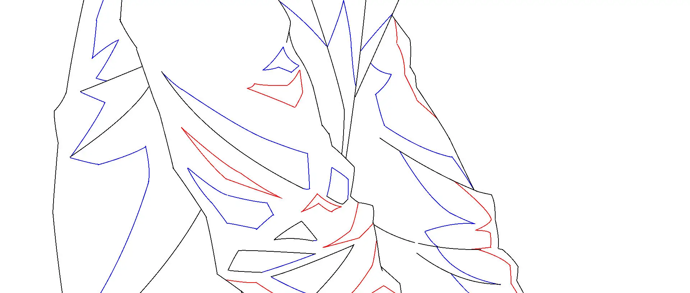
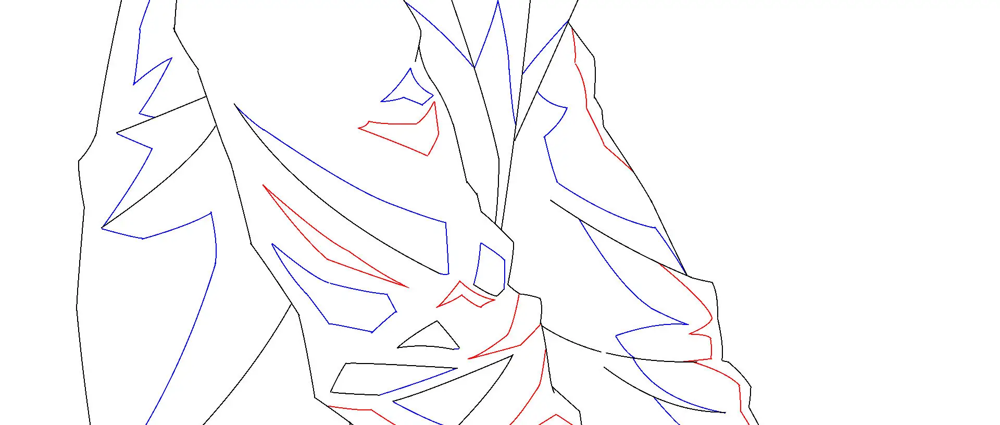

준비된 스토리보드에 따라 본격적인 프로덕션 작업을 진행했습니다. 최초 기획 시 예상했던 것보다 작업 방식이나 강도가 많이 달라졌었고, 변수도 많았던 것 같습니다. 상대적으로 짧은 기간(약 2달)동안 프로덕션+전체 작업을 진행했기에 아쉬운 부분도 많이 있습니다.
생성형 AI로 2D 형식의 애니메이션을 만드는 것은 가능할 수 있지만, 부분 부분에서는 불안정한 모습을 보이고 있습니다. 캐릭터 부분, 특히 작화 상태의 안정성과 외형의 일관성을 유지하기 어렵습니다. 따라서 2D 애니메이션 프로세스를 적용해 직접 그려서 해결해야 한다는 결론을 내리게 되었고, 캐릭터는 수작업으로, 배경은 생성형 AI의 도움을 받아 합성하여 프로덕션을 진행했습니다.
 
